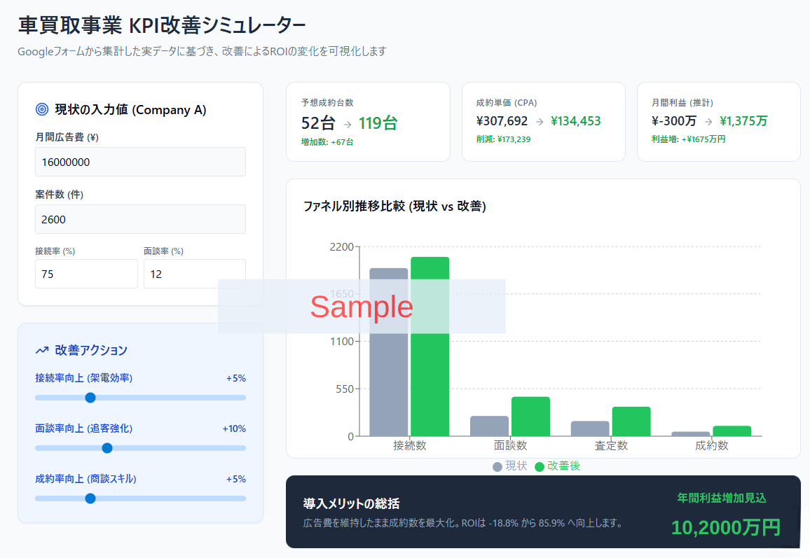
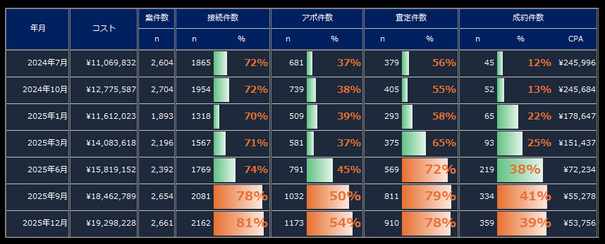

中古車買取・査定会社向け 成約構造AI最適化
毎月高い広告料を払いながら
見込み顧客を取りこぼしていませんか？
広告費を変えずに歩留まりを改善するデータ基盤構築
面談や成約が増えない原因は、努力不足ではなく
「どの工程で失注しているかわからない」からです。
成約AIエンジンでは
架電データやコール履歴をAIに読ませるだけで、
「どこで・なぜ・どれだけ」機会損失しているかを可視化し、
AIを用いて、結果が出る条件を提示します。
- 接続率・面談率・査定率・成約率を可視化
- 「担当者×時間帯×媒体×車種」から、AIが"勝ちパターン"を抽出
- 「次に何を変えるか」を優先順位付きで、現場ルールとして提示
※フォーム入力＋データ送付でレポートを作成します。費用・契約は一切不要。

※実データをもとにしたサンプルです。
▲電話をかければかけるだけよい。
→「架電回数を増やす前に、
伸びる条件を揃える。」
"架電回数を増やす","5分以内の架電"——その手段は知っている。
しかし、問題はそれらを実行するでは成約数が変わらないことです。
「5分以内の架電」をしただけでは、成約数が伸びない理由
架電の早さは「成約条件のひとつ」に過ぎません。同じ"5分以内の架電"でも、担当者・トーク・媒体・時間帯の組み合わせによって、面談率は2〜3倍以上変わります。早さより先に「何を変えれば伸びるか」を特定しないと、闇雲に急いでも無意味です。
架電回数を増やすと、CPAが悪化するケース
単純に架電回数を増やすと、人件費は比例して上昇します。かつ、しつこいコールは顧客評価を下げ、その後の商談品質にも影響が出ます。"量でカバー"する前に、転換率そのものを上げる方が費用対効果は圧倒的に高い。（CPA：1件成約に要するコスト）
AIで「結果が出る条件」を特定し、再現性ある運用へ
成約AIエンジンは、過去の架電データからAIが"勝ちパターン"を抽出します。「Aさんが火曜午前に○○媒体のリードに電話すると面談率が高い」——こういった条件は人力では見えません。これを現場ルールに落とすことが目的です。

※実データをもとにしたサンプルです。
サービス
成約AIエンジンでできること
難しいシステム連携は不要。最初は架電データ（CSV）や通話メモ、テキスト等で分析可能です。簡易診断後データを送付いただき分析を実施いたします。
１．データ受領
架電データ・コール履歴・管理スプレッドシートをそのまま送付するだけ。
２．KPI変換・ファネル整理
架電→接続→面談→査定→成約の転換率を統一指標に整形。「何を分母にするか」も再定義します。（KPI：重要業績評価指標）
３．AI分析・ボトルネック特定
担当者・時間帯・曜日・地域・媒体・車種・初動時間・回数などの軸でAIが要因を分析。「どこで落ちているか」を一目で特定します。
４．打ち手提示・改善実行
「何を・どの順番で変えるか」を優先順位付きで提示。スクリプト修正・ルール変更・KPI再設計まで具体化します。
人が見落とす“組み合わせ”をAIが自動発見
これまでの分析は、担当別・月別・媒体別に切り分けて「目で見て判断」するしかありませんでした。しかし成約は、複数条件の“掛け算”で決まります。
成約AIエンジンは、担当・媒体・時間帯・初動・車種などの条件を同時に分析し、統計的に有意な勝ちパターンを自動で抽出します。
さらに「今すぐ変えられる順（インパクト×難易度）」で、現場ルールに落ちる形に変換します。
診断レポート
「どこが悪いか」だけでなく、
「次に何を変えるか」まで提示します。
データを受け取ってから最短５営業日で、以下の分析レポートを作成いたします。
※実データをもとにしたサンプルです。
また、契約後CSVなどのいただけますと、以下の分析を実施し、データの可視化や、改善案などをオンラインでご説明します。
ボトルネック特定マップ
接続率・面談率・査定率・成約率の4段階ファネルを可視化し、「どのステージで最も機会が失われているか」を一目で示します。
"勝ちパターン"の候補リスト
担当者・時間帯・曜日・媒体・車種・初動時間などの条件から、成果に強く影響している要因をランキング形式で提示します。
改善の優先順位（インパクト×難易度）
「すぐ変えられて効果が大きいもの」から順に、改善アクションを整理します。実行リソースを無駄にしない順番が分かります。
次アクション（現場に落ちる具体案）
スクリプトの修正ポイント、架電ルールの変更案、KPI管理表の再設計など、明日から動けるレベルで具体化します。
導入事例
架電台数を増やさずに、成約が月18台→39台に。
架電オペレーター5名・月間リード数約200件規模の中古車買取会社（関東）。
「成約率が2割台から上がらない」という課題から始まりました。
改善前 → 改善後（目安）
データの可視化を実施し、社内オペレーションを変更し、面談、成約率などが改善された例です。
- アポ率37.5%
- 成約率13.0%
- 月次成約台数88台
- アポ率46〜54%
- 成約率33〜40%
- 月次成約台数350〜500台
※数値は「一例」です。業態・媒体・地域・人員構成で変動します。

※実データを匿名化したサンプルです。
改善ポイント参考
-
1担当者×時間帯のルール化（勝ちパターンの再現） AIが分析した結果、「午前10〜12時・特定担当者・特定媒体」の組み合わせで面談転換率が3倍以上高いことが判明。この組み合わせを優先的に配置するルールを現場に実装。
-
2「接続後のトーク」を媒体別に分岐させた 媒体によって顧客の温度感・懸念点が異なることがデータから明確に。媒体ごとにスクリプトの冒頭30秒を変更したことで、面談離脱率が大幅に低下。
-
3KPI管理を「架電回数」から「面談獲得数」に転換 現場が追うべき指標を変えることで、"接続して満足"が消えた。オペレーターが面談獲得を意識したアプローチへ自然にシフトした。
▍なぜ"AI"でなければ見えなかったか
「担当者Aが火曜午前にB媒体リードに対して初動3分以内で架電した場合の面談率が72%」——この種の条件の組み合わせは、変数が多すぎて人力では見つけられません。エクセルで集計しても、項目を絞りすぎたり、見落としが出たりします。AIはすべての条件の組み合わせを一括で処理し、統計的に意味のある"勝ちパターン"だけを浮かび上がらせます。
導入企業様の声
「以前は5つのExcelを駆使して数時間かけていた分析が、自動化されました。どこで数字が落ちているかが一目瞭然なので、改善PDCAのスピードが劇的に上がりました。」
「リストごとの接続率とアポ率の相関が可視化され、『どのリストに誰を当てるべきか』の最適解が見えました。無駄な架電が減り、オペレーターの疲弊も減りました。」
ご導入の流れ
最短5営業日で診断レポートをお届けします。
難しい事前準備は一切不要。「今あるデータ」をそのまま送付してください。
① フォームで申し込み
会社名・連絡先・現状の課題を簡単にご記入いただきます（3分程度）。
② データを送付
返信メールにある、フォームに回答いただく。
また、架電CSV・スプレッドシートなど「今あるデータ」を送付いただく。整形は弊社で対応します。
③ 無料診断レポートをオンラインで説明
最短5営業日でレポートを作成し、ビデオ会議にてご説明します（所要45〜60分）。
④ 改善実行（スポット or 継続）
診断後、プラン選択、ご契約のご判断をいただきます。
小さく始めて、変更可能です。
価格は「拠点数・データ粒度・連携範囲」で変動します。まずは無料相談で最適プランを提案します。
スターター
コストを抑えて、まずは自社で改善を試みたい企業向け。ボトルネックを特定し、優先順位を明示します
- 接続/面談/査定/成約の可視化
- 月次レポート（打ち手付き）
- 定例：月30分mtg
グロース
データの可視化、AIを用いた分析、改善レポート。勝ちパターン抽出→現場ルール化まで対応いたします。
- 接続/面談/査定/成約の可視化
担当×時間×媒体×車種の分析 - 「次に変える」を優先順位で提示
- AIを用いたリードの質分析、月次レポート（打ち手付き）
- 定例：隔週 30分mtg
伴走
人手が足らなく、架電リソースなども足りない企業向け。現場の営業、教育などもサポート。KPI設計・運用導入・教育まで。
- 接続/面談/査定/成約の可視化
担当×時間×媒体×車種の分析
拠点/役割別KPI設計 - 施策テンプレの提案
AIを用いたリードの質分析、月次レポート（打ち手付き） - 定例：週1 60分
- ※：別途、成果報酬や稼働費用が掛かります。
チャット、メールでのサポート込み。
※上記は目安です。成果を保証するものではありませんが、改善の優先順位を明確にし、再現性のある運用に寄せます。
月額50万円投資時のROI
【費用対効果】シミュレーション
現在の広告費を一切増やさずに、
当社のシステムで歩留まりを改善した場合の月間利益増加モデルです。
| 項目 | 導入前（現状） | 導入後（改善） |
|---|---|---|
| 月間架電案件数 | 3,000件 | 3,000件 (維持) |
| アポ取得率 or 成約率 | 10% | 20% (+10%) |
| 月間買取成約台数 | 30台 | 60台 (+3台) |
| 1台あたり粗利仮定 | 100,000円 | 100,000円 |
| 月間粗利総額 | 3,000,000円 | 6,000,000円 |
差引利益増加額： +3,000,000円 / 月
システム利用料(月額50万円)を支払っても、
毎月200万円以上の利益が手元に多く残る計算になります。
よくあるご質問
導入前の疑問にお答えします
CTI（電話システム）がなくても利用できますか？
CSVだけでも分析できますか？
小規模（オペレーター3〜5名程度）でも効果がありますか？
どれくらいで改善が出始めますか？
音声解析はいつから使えますか？
データの取り扱い・機密情報の管理はどうなりますか？
▶ 無料診断レポートを申し込む
無料診断レポート
まず「現状」を分析してみませんか？
費用・契約は一切不要です。
既存の架電データを送るだけで、御社のファネルのどこが問題で、何から変えればよいかをレポートにしてお届けします。
送付していただくデータ例（あるもので大丈夫です）
- 架電CSV（日時・担当者・結果・ステータスが入ったもの）
- 反響〜成約までの管理スプレッドシート
- 媒体別リード数・成約数の集計表（直近3〜6ヶ月）
- 担当者別の成果記録（ある場合）
- 現在把握しているKPI数値（なくても可）
申込情報1分で入力可能です。
※ 申し込み後、担当者よりデータ送付方法のご案内メールをお送りします。
※ 無理な営業・勧誘は一切行いません。